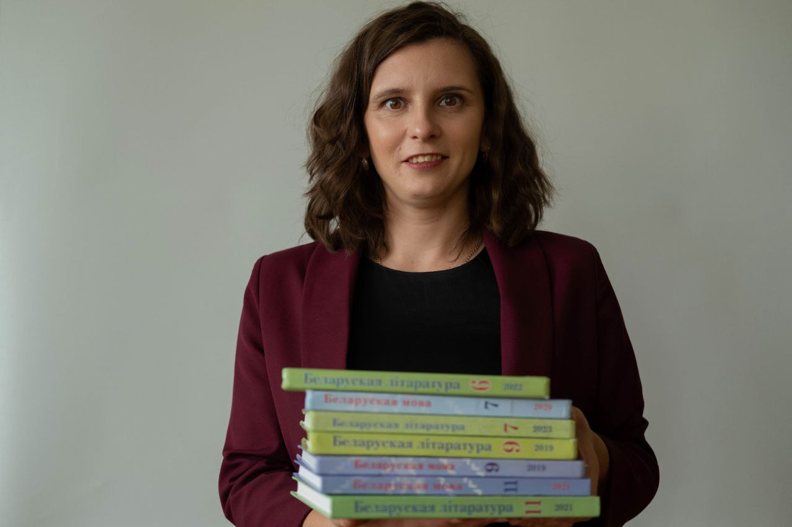

Біяграфія шэф-повара
У кожнага добрага рэстарана ёсць гісторыя пра тое, як яго шэф стаў да пліты.
Тут — шлях Таццяны Віктараўны: ад гродзенскай дзяўчынкі да шэф-повара ўласнай педагагічнай кухні.

23 лютага 1988 года ў вёсцы Левыя Масты Мастоўскага раёна Гродзенскай вобласці з’явілася на свет будучая настаўніца. Некалькі гадоў сям'я жыла ў вёсцы, дзе ўсе размаўлялі па-беларуску. Менавіта тады ў дзіцяці зарадзілася любоў да роднай мовы. Гэта першы, базавы пласт густу, які нічым не замяніць.
У 7 класе адбылася сустрэча з настаўніцай беларускай мовы і літаратуры. Яе вобраз — «жанчыны элегантнай, моцнай і пяшчотнай адначасова» — стаў тым ідэалам, да якога захацелася імкнуцца. Менавіта тады, у 7 класе, прыйшло цвёрдае рашэнне: стаць настаўнікам беларускай мовы і літаратуры. Гэты інгрэдыент дадаецца аднаразова, але вызначае ўвесь далейшы смак.
Вучоба ішла вельмі добра: школа скончана з залатым медалём і атэстатам з адзнакай. З 8 класа — удзел у алімпіядах па беларускай мове і літаратуры, шмат чытання. Сама Таццяна Віктараўна прызнаецца: «душа больш ляжала да моў і літаратур». Перамяшайце ўсё гэта старанна — атрымаецца трывалая аснова.
У 2005 годзе паступіла ў Гродзенскі дзяржаўны ўніверсітэт імя Янкі Купалы на спецыяльнасць «Беларуская філалогія». Вучылася да 2010 года, пакуль не атрымала кваліфікацыю «Філолаг. Выкладчык беларускай мовы і літаратуры». Універсітэт скончыла з чырвоным дыпломам.
У тым жа 2010 годзе прыступіла да першага месца працы — дзяржаўная ўстанова адукацыі «Сярэдняя школа № 8 г. Гродна». За гэты час закончыла магістратуру па спецыяльнасці «Мовазнаўства».
З 28 жніўня 2019 года перайшла працаваць у дзяржаўную ўстанову адукацыі «Сярэдняя школа № 41 імя А.М. Кузняцова г. Гродна».
На дадзены момант мае кваліфікацыйную катэгорыю «настаўнік-метадыст». Педагагічны стаж складае больш за 15 гадоў. Менавіта столькі часу робіць густ па-сапраўднаму багатым.
другая кваліфікацыйная катэгорыя
першая кваліфікацыйная катэгорыя
вышэйшая кваліфікацыйная катэгорыя
кваліфікацыйная катэгорыя «настаўнік-метадыст»
Пяць літар — пяць інгрэдыентаў, з якіх шэф рыхтуе кожны навучальны год. Навядзіце курсор (ці кранiце карткі) — яе літара ў друку ажыве.
Ініцыятыва, індывідуальны падыход
АСНОВА РЭЦЭПТУТаццяна Віктараўна не чакае ўказанняў зверху, а сама ініцыюе стварэнне новых метадычных распрацовак, конкурсаў і праектаў. Яна актыўна ўдзельнічае ў інавацыйнай дзейнасці, распрацоўвае ўласныя дыдактычныя заданні і гульні, якія робяць урокі непаўторнымі. Індывідуальны падыход – гэта яе свядомая пазіцыя: у класах, дзе вучыцца па 28–32 вучні, яна імкнецца заўважыць кожнага, улічыць тэмп працы, рысы характару і даць шанец выправіць адзнаку, бо разумее, што «самая складаная загадка ў прыродзе – гэта чалавек».
Дабрыня, добразычлівасць
ЦЁПЛАЕ ПАВЕТРА ДУХОЎКІГэтыя якасці з’яўляюцца фундаментам яе педагагічнай філасофіі. Яна стварае ў класе атмасферу даверу і падтрымкі, дзе кожны вучань можа выказаць сваё меркаванне без страху насмешак. Яе добразычлівасць праяўляецца не толькі ў стаўленні да дзяцей, але і ў працы з калегамі: яна заўсёды гатова дапамагчы маладым спецыялістам, падзяліцца вопытам і падтрымаць іх у цяжкую хвіліну. Менавіта дабрыня дазваляе ёй знаходзіць «ключык» нават да самых складаных вучняў.
Энергія, эксперымент
КОШЫК СВЕЖЫХ ПРАДУКТАЎТаццяна Віктараўна – чалавек невычэрпнай энергіі. Яна адначасова вучыць, кіруе класам, піша артыкулы, выдае дапаможнікі, выступае на канферэнцыях і вядзе Instagram. Яе энергія заражае вучняў і калег. Эксперымент – гэта яе творчае крэда: яна не баіцца ўкараняць новыя тэхналогіі, выкарыстоўваць інтэрнэт-сэрвісы, ствараць аўтарскія гульні і квэсты. Менавіта дзякуючы схільнасці да эксперыментаў яе ўрокі становяцца сучаснымі, цікавымі і запамінальнымі.
Актыўная жыццёвая пазіцыя
РУКА ШЭФАГэта не проста словы, а рэальнасць. Яна з’яўляецца кіраўніком раённай школы маладога настаўніка, членам абласной творчай групы, удзельнічае ў якасці журы на алімпіядах, праводзіць майстар-класы для слухачоў курсаў павышэння кваліфікацыі. Яна не застаецца ў баку ад грамадскага жыцця школы і горада, актыўна ўдзельнічае ў патрыятычных акцыях і праектах. Яе актыўнасць – гэта прыклад для вучняў, які паказвае, што жыць трэба неабыякава, з поўнай самааддачай.
Любоў да дзяцей і сваёй прафесіі
САКРЭТНЫ ІНГРЭДЫЕНТЛюбоў да дзяцей праяўляецца ва ўсім: у тым, як яна сустракае вучняў з усмешкай, як арганізоўвае для іх мерапрыемствы і святы, як хвалюецца за іх поспехі і падтрымлівае ў няўдачах. Любоў да прафесіі бачна ў яе імкненні пастаянна развівацца. Такая любоў і ёсць той рухавік, які дазваляе ёй штодня здзяйсняць свой працоўны подзвіг.